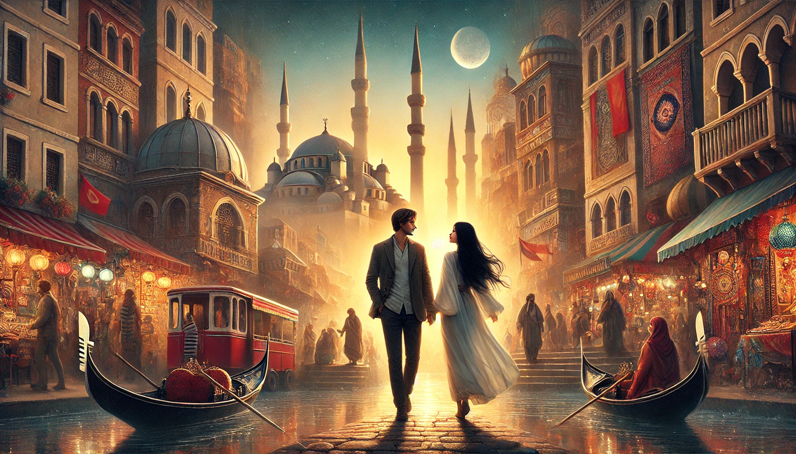

ПУТЕШЕСТВИЯ
Ты знаешь, я иногда думаю о наших будущих путешествиях. Как здорово будет открывать мир вместе, делиться своими любимыми местами, узнавать друг друга через новые впечатления. Каждый город, каждая страна станет не просто точкой на карте, а местом, где мы проживаем что-то важное вместе.
Ты говорил, что хочешь показать мне Венецию, и я уже представляю, каким удивительным будет это путешествие. Мы будем гулять по её узким улочкам, где дома кажутся почти нереальными, отражаясь в воде. Ты будешь рассказывать мне о её истории, показывать места, которые для тебя особенно важны. Мы сядем в гондолу, ты с лёгкой улыбкой скажешь что-то, что заставит меня рассмеяться, и я буду смотреть на эти мосты и каналы, чувствуя, как вода отражает наше настроение. Венеция будет про нас, про наше время вместе, когда каждый момент становится чем-то значимым.
А однажды я покажу тебе Стамбул. Этот город совсем другой — шумный, колоритный, живой. Его улицы наполнены звуками — от призывов на молитву, разносящихся с минаретов, до гулких голосов торговцев на базарах. Мы пройдём через Гранд Базар, где тебя будут окружать яркие ткани, пахучие специи, чайники из меди и бесконечное разнообразие. Я буду наблюдать, как ты пытаешься разобраться в этом хаосе, и мне будет так интересно видеть твою реакцию.
Потом мы пойдём к Босфору, и я покажу тебе, как этот город соединяет два мира — Восток и Запад. Мы будем смотреть на пролив, по которому плывут корабли, почувствуем солёный морской ветер и увидим, как старые и современные здания сливаются в удивительный ландшафт. А вечером, возможно, мы сядем на паром, и, пока огни города зажигаются в темноте, будем пить чай из тонких стаканов и обсуждать всё, что увидели за день.
Мы обязательно поднимемся в Галатскую башню, чтобы посмотреть на город сверху: крыши, мосты, купола мечетей и бескрайние линии горизонта. Ты будешь задавать вопросы, и я пойму, как тебе важны не только яркие картинки, но и то, что скрыто за ними. Стамбул — это место контрастов, где древняя история и современная жизнь соседствуют так близко, что ты начинаешь видеть мир с другой стороны.
Но наши путешествия не будут только про Венецию и Стамбул. Мы будем гулять по улицам незнакомых городов, теряться в их лабиринтах и находить что-то своё. Ты будешь показывать мне свои любимые места, а я — те, что близки мне. Мы будем смотреть на звёзды в горах, слушать шум волн у моря, пробовать новую еду, смеяться над ошибками с картами или языком, но каждый момент будет про нас.
Иногда наши поездки будут спонтанными: собрали рюкзаки, сели в поезд или на самолёт и отправились туда, где нас ждут приключения. Мы не будем знать точно, что найдём, но это и неважно. Главное, что мы будем вместе, открывать для себя мир, одновременно раскрывая что-то новое друг о друге.
И однажды мы сделаем ещё один важный шаг. Мы уедем из России, чтобы начать новую главу нашей жизни. Возможно, это будет Кипр — солнечный, спокойный, с бирюзовыми волнами и мягким ритмом жизни. Мы будем строить там наше будущее, одолевать новые карьерные горы, поддерживать друг друга в каждом начинании. Это будет не просто переезд, а наша совместная победа, наша новая история, где мы будем рядом, помогая друг другу расти и становиться сильнее. И я знаю, что где бы мы ни оказались, с тобой я всегда буду чувствовать себя дома.
